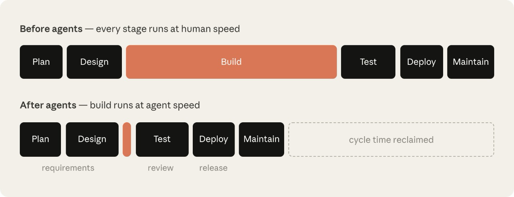

AI 原生软件开发生命周期手册
The AI-Native SDLC playbook
如何用 AI 改造软件开发生命周期——逐阶段推进。
先看这五句 / Highlights
译者补充，不是原文。
- 代码已经不是瓶颈，卡在计划、评审/测试、发布这些仍按人的速度走的环节。
- AI 原生 SDLC 把线性阶段收成闭环：每阶段提交下一阶段能读的产物，提交即触发下一关。
- 人类仍对需要判断的决策负责，注意力从写材料转到过关：
intent.md→spec.md→plan.md→ diff/测试 → PR 评审 → 生产控制带。 - 制度知识写成
CLAUDE.md/ skills，硬约束用 hooks；技能是劝告，必须成立的政策要挂钩或 PR 再检。 - 维护阶段可以无人启动：控制带被突破就诊断并写回
intent.md；生产门前人可以自动化，过门必须人授权。
代码已经不是瓶颈
各组织已经开始用 AI 写代码，速度是一年前难以想象的，但代码周围的流程并没有以同样的速度改变。
许多工程团队仍然沿用同样的审批关口、评审、交接和政策，把 Claude Code 这类智能体编码方案带来的生产力收益卡住了。
软件开发生命周期（SDLC）是把软件从想法送到生产的过程。大多数组织都在跑同一套六个阶段的某个变体，覆盖计划、设计、构建、测试、部署和维护。传统上，每个阶段是一个由不同角色负责的独立相位。产品经理写需求，技术架构师把需求变成设计，工程师按设计实现，受监管企业的 QA 团队核验，发布团队上线，运维监控正在运行的系统。工作通过文档、工单和签字在各相位之间流动。
传统软件开发生命周期（SDLC）流程很重，是为了在每一步保证问责和控制。然而，传统 SDLC 是为这样一个时代设计的：最耗时、最昂贵的阶段是编写和实现代码——现在已经不是这样了。PRD、估点仪式和产品安全评审，都是为了在可能长达数周、数月甚至数个季度的开发工作中强制对齐。
传统 SDLC 的控制措施还假设每一步都由人来做。创造最大价值的组织已经围绕智能体 AI 现在能做的事情重建了流程，同时确保人仍在回路里。本指南梳理了我们 Applied AI 团队在 SDLC 各阶段内部接入 Claude 的若干最佳实践，用来加快开发、让流程跑得更快，灵感来自与客户的合作。
当代码不再是瓶颈、构建阶段跑得比传统 SDLC 允许的更快时，三件事会变成真的：
- 瓶颈移到构建阶段左右两侧的步骤。主要是计划、评审/测试和部署，它们仍按人的速度运行。
- 控制措施不再匹配现实，变得难以运转。当代码是人写的时候，逐行手审说得通；一旦大部分 diff 由智能体写出，它就跟不上了。
- 治理成本上升，因为例外仍然要绕进每周或每月开一次的会议和委员会。

以安全瓶颈为例。安全团队是按人的产出规模配置的，所以当智能体把代码产出放大时，要么评审队列堆积，要么代码在评审不足的情况下上线。受监管组织两种结果都不能接受，因此它的安全和策略检查必须跟上智能体的节奏。
为了更好地兑现并保障智能体 AI 的生产力收益，传统 SDLC 生命周期需要经历与实现阶段同等程度的改造。
什么是 AI 原生 SDLC？
AI 原生 SDLC 是一套重新设想的流程，把旧的控制目标与新的执行方式结合起来。流程不再是线性流动，而变成一个闭环，AI 嵌在每一个点上。AI 原生 SDLC 推动自动交接并触发后续打法，用来解决传统 SDLC 各相位之间手工、笨拙的交接。
你也会听到这种转变被叫做 agentic SDLC、AI SDLC，或干脆叫智能体软件开发——标签不同，说的是同一件事。

AI 原生 SDLC 六个阶段上的转变
下表标出传统 SDLC 与由 Claude 支撑的 AI 原生 SDLC 光谱的两端。大多数组织落在两列之间的某个位置。
| 阶段 | 传统 SDLC | AI 原生 SDLC |
|---|---|---|
| 计划 | 需求由委员会收集，经工作坊和签字提炼，再手工写成文 | Claude 直接从源头综合痛点，写入人类可读、机器可执行的 intent.md |
| 设计 | 分析师写规格，设计师再解析 | 需求与设计压缩进与智能体的一次工作会话，由写成 skills、在 git 里版本化的标准引导 |
| 构建 | 测试和代码手写，文档在主体开发之后再补 | 测试和代码由 AI 生成，制度知识维护成版本化、机器可读的 CLAUDE.md 文件和 skills |
| 测试 | 在阶段边界设 QA 关口 | 持续 evals 织进实现过程 |
| 部署 | 人审每一行代码，治理发生在评审周期里，往往不一致 | 多层智能体评审，人工评审留给受监管和关键代码。治理在 AI 行动时执行，hooks 充当审批关口 |
| 维护 | 人盯生产找缺陷 | 智能体监控线上部署。任何被突破的控制带都会被诊断，并作为新的 intent.md 写回闭环 |
贯穿右列的主线是已提交的产物。每个阶段结束时把一份产物写入版本控制（包括 intent.md、spec.md、plan.md、diff 及其测试、带评审发现的 PR，以及事故记录），下一阶段开始时读取它。早期阶段以 .md 文件为主要产物，因为产品负责人和智能体都能读、都能对同一份文件采取行动。从构建开始，产物是代码及其记录。提交链同时也是审计轨迹：谁要了什么、智能体产出了什么、谁批准了它。
人类仍对每一个需要判断的决策负责。在智能体 SDLC 的世界里，人的注意力随必须评审的产物一起转移。
打法
打法是本手册的核心，按六个非线性阶段分组（计划、设计、构建、测试、部署、维护），合在一起覆盖完整生命周期。
每条打法覆盖：
- 什么变了；
- 怎么开始；
- 可落地的实施步骤；
- 治理考量；以及
- 怎么衡量它是否奏效。
这些步骤是模块化的，组织可以根据自身需求，选择在不同时间优先改造不同阶段。每条打法在「前置条件」下列出依赖，依赖图会进一步说明。
一个阶段以提交一份产物结束，这次提交启动下一阶段。被接受的 intent.md 触发需求与设计这一轮，获批的 spec.md 触发 plan mode，合并的 PR 触发流水线，生产中被突破的控制带写出下一份 intent.md，闭环就这样继续。
一开始，你用手写提示走每一步，终点是一个闭环：每一份被接受的产物触发下一道关口。人的注意力集中在关口上，评审智能体标出的内容，而不是从零开始每个阶段。

计划
想法不再等人写成文。意图只捕获一次，用发起人自己的话，作为下一阶段能据之行动的、受版本控制的产物。
捕获为 intent.md
启动软件开发过程的 intent.md 可以从不同路径进入。一个人有了一个想法，一张工单被提交，或一次事故通过告警浮出（见第 6 阶段：维护）。
当一个人有想法时，他们与 Claude 头脑风暴，产出一份 markdown 原型规格。在传统 SDLC 里，同一个人必须再说服产品团队的某位成员，和他们一起或代他们把想法写成文。
Claude 生成的原型规格人类可读、受版本控制，并且能立即被下一阶段消费。原型规格保存为 intent.md。
无论意图来自事件触发还是智能体，步骤相同：产品负责人在提交之前评审并修正智能体写的 intent.md。
intent.md，一份用发起人自己的话写的原型规格。产物包含要什么、为什么、以及在哪些约束下。重复过程通过 skills 编码。intent.md 模板；一个产品负责人会盯着的、共享且受版本控制的意图存放处。对单一产品，最简单的存放处是产品仓库里的 intent/ 文件夹。这样产物链就挨着由它派生出的代码。只有当意图跨越许多仓库时，单独的 intent 仓库才值得这份开销；在 monorepo 里它就是一个目录。第 3 阶段：构建的边栏会说明，这个存放处如何对应已经保存记录的 Jira 或需求工具。搭这套东西是平台或工程团队的一次性任务。需要一名技术团队成员把意图存放处立起来，并决定谁可以写入，因为许多贡献者将来自组织各处。
仓库一旦存在，没有 git 经验的贡献者不需要直接用 git。连到版本控制系统（例如 GitHub）的连接器可以让 Claude 从 claude.ai 或 Cowork 代他们提交 markdown 文件。
怎么执行
- 发起人用自己的话向 Claude 描述问题。发起人可以描述今天做不到什么、想法影响谁、更好是什么样，或什么不在范围内。不需要正式语言。
- 头脑风暴，直到想法具体。Claude 会问分析师会问的问题：范围、用户、约束，以及成功是什么样。
- 请 Claude 用组织的模板把结果写成
intent.md。模板可以编码成一项 skill，由技术团队成员搭建、由负责人签字。可以覆盖问题、拟议结果、受影响的用户和系统、约束，以及未决问题。 - 发起人修正 Claude 理解错的任何内容。
- 把
intent.md提交到共享存放处。作者和时间戳进入记录，产品负责人从那里接手这个想法。
# Intent: 理赔状态自助查询
Author: J. Ortiz (理赔运营). Status: draft.
## Problem
客户打电话到联络中心询问理赔进展到哪一步。
处理人员大约三分之一的通话时间花在仅查询状态的请求上。
## Proposed outcome
客户能在门户里看到理赔状态、下一步以及预计日期。
## Affected users and systems
理赔处理人员、门户团队、claims-core API。
## Constraints
门户会话中不新增 PII。只用现有认证。
## Open questions
第三方损失公估人是否也需要访问？
治理考量
证据就是已提交的 intent.md，其中列出作者、时间戳和完整修订历史。它记录在意图存放处的 git 历史里。产品负责人批准；把意图送入第 2 阶段：设计的接受或拒绝决定，记为合并或关闭评审。
intent.md 的时间，从意图存放处的 git 历史读取，那里记录了作者和时间戳。预期是从长达数周的需求采集和精化周期降到几小时。intent.md 占比。接受或拒绝决定记为产物的合并或关闭的评审。此外，同一变更在第一次 spec.md 提交之后对 intent.md 再做的修改次数。设计
需求和设计收成一次会话。策略在规格写成时就被应用，而不是几周后的评审里才被发现。
需求与设计
产品负责人批准之后，Claude 拿被接受的 intent.md，产出一份需求与设计规格。这由组织在品牌、安全、合规和 UX 方面的 skills 引导。
产品负责人评审这份规格，但不写它。这一过程的目标，是做出一份工程团队可以据之做计划的规格，并标出需要关注的区域。
前端工作是最清楚的例子。intent.md 被接受后，产品负责人根据 intent.md 在 Claude Design（beta）里做出设计稿，迭代稿件，再导出到 Claude Code 去构建。
intent.md 产出需求与设计规格，受组织 skills 约束，并标出需要关注的区域。intent.md 文件，并把品牌、安全、合规和 UX 政策写成 skills。怎么执行
- 产品负责人打开一次会话，组织的 skills 可用，并附上
intent.md。 - 产品负责人的提示指向
intent.md，点名约束，并要求标出关注点。一开始用手跑，然后把它固化成组织级 slash command。再往后，把意图存放处里对intent.md的接受做成触发器：合并时触发一个非交互作业，加载组织的 skills 跑这一轮，并把spec.md作为 pull request 提交（第 5 阶段：部署的 CI/CD 打法覆盖这些管道）。从那一刻起，产品负责人的第一次介入就是评审。 - 同一位产品负责人对照想法评审规格。规格是否解决了所述问题？
intent.md里的未决问题是被回答了，还是被带下去了？ - 先处理标出的关注点，它们就是分析师会升级的那些点。产品负责人在工程看到规格之前，和对应政策负责人逐条解决。
- 把
spec.md和intent.md一起提交。这一对文件记录了要什么、决定了什么。 - 产品负责人决定规格和意图是否进入构建，对组织列为更高风险的事项咨询技术负责人。永远由人类队友做这个决定；接受规格，就会启动第 3 阶段：构建的 plan mode 打法。
看起来怎样（提示）
阅读所附的 intent.md，并产出一份需求与设计规格，说明如何把它接入我们现有代码库。应用你可用的 skills，使计划符合我们的品牌指南、安全政策和 UX 标准。把规格完整写成 spec.md，准备交给工程团队。清楚描述任何需要关注的区域，尤其是你无法同时满足相互冲突的政策的地方。治理考量
现行政策在规格写成时就被读取并应用，而不是几周后的评审里才被发现。组织的 skills 作为对规格的约束被应用。规格、产出它的提示，以及当时生效的 skill 版本，都记在版本控制里。产品负责人签字规格，并把标出的关注点转给点名的政策负责人。
intent.md 提交到 spec.md 提交的经过时间（两个 git 时间戳），与旧的需求加设计周期比较。plan.md 提交之后的 spec.md 提交次数。git log 可以直接给出这个数。构建
没有被接受的计划，就不实现任何东西。制度知识变成智能体读取的文件，护栏作为代码运行，而不是作为习惯。
把 Claude Code plan mode 作为默认起点
工程师在 plan mode 里启动 Claude Code 会话，把第 2 阶段：设计里获批的 spec.md 交给 Claude，让它访谈他们，迭代计划，直到工程师满意。
plan.md 提交，供后续阶段对照检查。intent.md 或 spec.md，若存在），CLAUDE.md 文件会有帮助。怎么执行
- 工程师与 Claude 在 plan mode 启动会话。
- 工程师把
intent.md和spec.md交给 Claude，要求一份实现计划：点名会改的文件、工作顺序，以及证明它的测试。 - 拷问这份计划：变更可能破坏什么，哪一步风险最大，Claude 没选的其它方案是什么。
- 迭代到一位从未看过这次对话的工程师，单凭计划就能实现这次变更。
- 把获批计划作为
plan.md提交。计划进入审计轨迹，PR 评审打法（第 5 阶段：部署）会用它对照最终 diff。 - 接受计划，让 Claude 实现。计划扎实的话，实现往往一遍就过。
- 实现若偏离计划，在同一次提交里更新
plan.md。可考虑用 hook 强制两者同步。
看起来怎样（plan.md）
# Plan: 理赔状态自助查询（来自 intent.md 2026-06-02）
## Files that change
portal/src/claims/StatusPanel.tsx (new), claims-api/routes/status.py,
claims-api/tests/test_status.py
## Order of work
1. 在现有认证后面加上状态 endpoint。
2. 对照该 endpoint 做面板。
3. 接到门户导航。
## Risks
claims-core API 在 50 rps 限流；面板必须做缓存。
## Proof
test_status.py 覆盖四种理赔状态；截图与获批稿一致。
治理考量
设计评审发生在生成任何代码之前，此时改方向仍然只是改一份文档。plan mode 自己就会强制这一点，因为在工程师接受计划之前，Claude 不能编辑文件。计划和它的修订连同谁接受了它一起被记录。常规变更由工程师批准，组织列为更高风险的事项交给技术负责人或架构师。
plan.md 匹配的频率。Claude Code 的 auto mode
Claude Code 也可以在 auto mode 下运行：工程师批准计划，一旦满意并迭代完毕，Claude 就应用每一处变更，而不再按编辑逐次提示。随着后续打法的护栏成熟（调过的 CLAUDE.md、把政策编码进去的 skills、拦截不安全动作的 hooks，以及 Claude 能跑的测试套件），auto-accept 会成为常规工作的默认：一份收紧的 spec.md、较小的爆炸半径，以及测试已经覆盖的代码。
重心现在从用户盯着智能体改文件、评审每一个动作，转向在更长的自主会话之后评审产物。auto-accept mode 再配合 worktrees，还能在个人和团队层面并行，并且是按第 6 阶段：维护所述自主运行 SDLC、合上闭环的基础。
The CLAUDE.md
CLAUDE.md 给 Claude 一个新加入者会需要的上下文，覆盖约定、命令、架构，以及团队最常见的错误。过去待在人脑子里和 wiki 上的知识，变成智能体在每次会话开始时读取的文件，由整个团队维护，并在每次犯错时迭代。
怎么执行
- 在仓库里运行
/init。Claude 根据它找到的内容生成一份起始CLAUDE.md。 - 把生成文件裁到新加入者第一天会需要的内容。保留构建、测试和 lint 命令，真正重要的约定，以及 Claude 一直搞错的事。
- 把
CLAUDE.md检入仓库根目录的 git，这样全队共享一个版本，变更像代码一样被评审。 - 这里有一条工作规则很有用。Claude 犯两次同样的错，修正就写进
CLAUDE.md。 - 控制在一页以内，因为 Claude 在会话开始时会读完全文，任何过时内容都在白白占用上下文。
看起来怎样（CLAUDE.md）
# Payments service
## Commands
- Build: make build
- Test: make test (unit), make itest (integration, needs docker)
- Lint: make lint (runs in CI; fix before pushing)
## Conventions
- Java 21, Spring Boot 3. 不要新增 Lombok。
- 金额一律用 BigDecimal，绝不用 double。
- 每个 endpoint 都要在 src/itest 有集成测试。
## Architecture
- api/ 放 REST controllers，core/ 放领域逻辑，
adapters/ 对接外部系统。
- Kafka events 定义在 schemas/；不要改生成出来的类。
## Things Claude gets wrong
- 不要擅自升依赖版本；由平台团队负责。
- 遗留的 v1/ 包已冻结；改动放进 v2/。
治理考量
CLAUDE.md 受版本控制，所以智能体据之工作的指令可评审、可审计。团队约定通过该文件应用，对它的变更记在 git 历史里，代码所有者在 PR 评审中批准这些变更。
CLAUDE.md 本应拦住的错误的频率。对 CLAUDE.md 的修正或变更应在 git 历史里跟踪。Skills 作为制度知识
Skills 是组织让制度知识可运转的方式。指令是明确的、受版本控制的、广泛应用的，并在政策变化时集中更新。经验法则：对必须被一致应用的制度知识写 skill；不要给属于 CLAUDE.md 或提示的内容写 skill。
CLAUDE.md 会有帮助，因为它把智能体的工作知识留在仓库里，但 skill 并不依赖它。怎么执行
- 挑一块今天执行得不一致的知识。可以是安全标准、API 设计约定，或品牌规则。
- 把它写成 skill：一个包含
SKILL.md的文件夹，frontmatter 说明何时触发，正文说明做什么。工程师根据政策负责人的事实来源来写，可借助 Claude。 - 把 skill 放进仓库的
.claude/skills/ /，让它随代码一起走，或通过插件在组织范围分发。 - 测试 skill 会触发。用不同方式请 Claude 做相关任务，确认每次都会加载该 skill。
- 政策变化时，改 skill，并由政策负责人签字这次变更。
- 工程师在下一次会话里自动拿到新版本。
看起来怎样（.claude/skills/secure-api-review/SKILL.md）
---
name: secure-api-review
description: Apply the API security standard. Use whenever creating or
modifying an external-facing endpoint, reviewing API code, or
generating an OpenAPI spec.
---
# Secure API review
当你创建或更改 API endpoint 时：
1. Authentication: 每个 endpoint 都需要网关 JWT；
除 /health 外不允许匿名路由。
2. Input validation: 按 OpenAPI schema 校验请求体，并拒绝未知字段。
3. Audit: 每个改变状态的 endpoint 发出审计事件，带
actor、action、entity 和 timestamp。
4. Data classification: schema 里标记为 pii 的字段绝不能
出现在日志或错误信息里。
运行 scripts/check-endpoints.sh，并把它的输出写进你的摘要。
治理考量
skill 是一种控制，不过是劝告性的。它让 Claude 在写代码时更可能应用政策，但没有东西强制一次会话必须遵守。一项必须始终成立的政策，需要 skill 背后有确定性的东西，例如拦截该动作的 hook，或在 PR 再检该政策的评审轮。skill 让违规变得少见，hook 让违规接近不可能。skill 调用记在会话 traces 里，政策负责人像审代码一样审 skill 变更。
Hooks 作为构建时护栏
skill 是劝告性控制，hook 是它背后的确定性层。Claude 在实现期间的大多数动作是文件编辑和 shell 命令，所以构建阶段是 hooks 最终触发最频繁的地方。
构建阶段的 hooks 可以：
- 拦截对受保护路径的编辑，例如生成类或已冻结的包；
- 在文件编辑后跑格式化和 linter，让漂移无从累积；
- 把凭据挡在 diff 之外。
任何政策必须毫无例外成立的 skill，都要在背后加 hook。hook 在每个匹配的动作上运行，所以构建阶段的 hooks 应当快，并限定在刚改的那个文件。完整测试套件这类更重的检查属于提交或 PR。
需要人批准的 hook 应放在第 5 阶段：部署的关口里，因为构建期间弹出批准提示，会把人重新放回所有并行会话的关键路径上。
并行会话与子代理
一名工程师可以同时驱动多条工作流。
并行会话是另一个完整的 Claude Code 实例，在自己的 git worktree 里做一项独立任务。各独立会话互不知情，它们共享的只有驾驭它们的工程师。
子代理在单次会话内运行，是带自己上下文窗口和工具限制的限定助手，适合在多个任务里反复出现的工作，例如核验应用是否按预期运行。
并行会话提高一名工程师可以同时推进的任务数，子代理则让每次会话专注于自己的任务。工程师的工作是驾驭并评审它们全部。
CLAUDE.md，因为所有会话都会读这个文件。反馈环（第 4 阶段：测试）在这里也有帮助，因为当会话能核验自己的工作时，工程师需要的监督更少。怎么执行
- 工程师把工作拆成触及不同文件的任务，用 plan mode 打法（第 3 阶段：构建）的计划看哪里是独立的。共享文件的任务在同一次会话里先后跑。
- 每个并行任务有自己的 worktree，例如一个终端里
claude --worktree feature-auth，另一个里claude --worktree fix-rate-limit。worktree 是自己分支上的独立检出，防止会话在文件上碰撞。 - 两到三个会话是合理的起点。实际上限是一个人能好好评审多少条流，所以只在评审跟得上时再加会话。
- 把重复工作变成子代理，定义在
.claude/agents/的 markdown 文件里，每个有名称、何时使用的说明，以及它可以碰的工具。例子包括：主智能体完成后剥掉多余复杂度的代码简化器；跑应用并检查行为的核验器；探索代码库并回报、而不淹没主上下文的研究员。把定义检入 git，让全队共享。
看起来怎样（.claude/agents/verifier.md）
---
name: verifier
description: 在会话报告完成之前，运行应用并检查变更是否生效
tools: Bash, Read
---
用 make run 启动应用。演练被改的行为以及最近的两条相邻流程。
报告你跑了什么、看到了什么，以及任何与 plan.md 不符的行为。
不要修任何东西；只报告。
治理考量
更多会话意味着更多产出，所以控制必须来自仓库里的配置。那里的 hooks 和权限设置适用于所有会话，会话做了什么被记录，并归到运行它的工程师名下。
测试
每次会话在人看到之前先检查自己的工作，引导智能体的配置像它写出的代码一样做回归测试。
给 Claude 一个反馈环
永远给 Claude 一种核验自己的工作的方式，无论是测试、构建，还是截图 diff。会话检查自己的工作，并在工程师看到之前修好自己的错误。
不要把反馈环和核验子代理（第 3 阶段：构建）混为一谈。反馈环贯穿整个任务，工作做多少次它就跑多少次。核验子代理则是把最终检查打包的一种方式：在会话认为工作完成后，用一个全新的上下文窗口跑一遍。这样裁决就不会被产出代码时的假设染色。
怎么执行
- 如果今天检查工作要一串命令和一些环境知识，把它包进一个单一目标，例如
make test或npm test，失败时以非零退出。 - 在
CLAUDE.md的 Commands 一节，列出每条命令，并带一个健康输出的例子。 - 给出可量化的目标，让 Claude 不用问你就能检查工作，例如：“
test_status.py里的全部测试通过”、“截图与所附稿一致”，或“endpoint 返回 200 且带上新字段”。 - 对缺陷修复，先写失败测试。请 Claude 把缺陷复现成测试，跑它，并确认它因你预期的原因失败。提交该测试。然后才请 Claude 在不改测试的前提下让它通过，最后一步的测试文件 hook 强制这条限制。修复之前就存在、且智能体无法改写的测试，就是缺陷已消失的证据。
- 对 UI 工作，用视觉检查合上环。给 Claude 浏览器或截图工具，给它稿，让它迭代。实现、截图、比较、调整。两三轮是正常的，结果应一轮比一轮好。
- 把核验做成「完成」的一部分。指令写在
CLAUDE.md。在报告任务完成之前跑测试，并展示输出。 - 最后，环本身需要保护，因为修代码的智能体不能削弱对那段代码的检查。在修复任务期间拦截对测试文件的编辑的 hook 能做到这一点。替代做法是在评审里看 diff，拒绝任何碰到测试的变更。
看起来怎样（CLAUDE.md 核验块）
## Verifying your work
- Build: make build（必须以 “Build succeeded” 结束）
- Test: make test（全绿；绝不跳过或删除失败测试）
- Lint: make lint（零警告）
在报告任何任务完成之前跑完这三项，并粘贴输出。
如果测试失败，修代码，不要修测试。
治理考量
强制什么：任务报告完成之前必须核验，以及修复期间拦截智能体编辑测试文件；两个都在组织希望保证的地方做成 hooks。
证据是什么：测试命令的字面输出、构建日志，或 Claude 跑过并粘贴的截图 diff，所以证据来自工具链。
记在哪里：会话转录，由 OpenTelemetry 导出转发到组织的可观测栈；以及 PR 的 check run，评审者和之后的审计员都能看到。
谁批准：评审 PR 的代码所有者。机械证据已经附上，他们可以专注于意图和风险。
CI 里的持续 evals
Evals 是 AI 原生意义上的阶段关口 QA。实践中，这意味着每当智能体的配置变化时就跑的一套套件。换进一个新模型或重写一条提示时，eval 套件会说智能体是否仍按同样标准做事。
evals 应被视为一套活的套件。随着模型变强，曾经能区分好坏的用例不再能区分，必须补上从持续监控里长出来的新用例。
视用例而定，有些团队可能更愿意按固定节奏离线跑这些 evals，而不是每次变更都跑。下面的步骤针对持续评估。
CLAUDE.md 和反馈环（第 4 阶段：测试）。怎么执行
- 平台工程师从近期工作收集 20 到 50 个真实任务，及其预期或可接受结果。
- 把每个任务写成 eval，即提示加上定义可接受的检查（测试通过、lint 干净、行为不变、政策被遵守）。
- 套件在 CI 里按计划非交互运行，并在
CLAUDE.md、skills 或 hooks 有任何变更时运行，因为正是这些配置引导智能体，值得代码所得到的那种回归测试。 - 用结果卡住配置变更。通过率下降的 skill 变更，合并前要被评审。
- 每次生产事故变成一条 eval，由拥有该事故的团队来写，并作为回归测试留在套件里。
看起来怎样（.github/workflows/agent-evals.yml）
name: Agent evals
on:
pull_request:
paths: ['CLAUDE.md', '.claude/**']
schedule:
- cron: '0 2 * * *'
jobs:
evals:
runs-on: ubuntu-latest
steps:
- uses: actions/checkout@v4
- run: npm install -g @anthropic-ai/claude-code
- name: Run eval suite
env:
ANTHROPIC_API_KEY: ${{ secrets.ANTHROPIC_API_KEY }}
run: |
for eval in evals/*.json; do
claude -p "$(jq -r '.prompt' $eval)" \
--allowedTools "Read,Edit,Bash(make test)" \
--output-format json > result.json
./evals/check.sh "$eval" result.json
done治理考量
Evals 给 QA 一道跟得上智能体产出的关口。通过率阈值作为合并检查被强制，运行被记录以便结果可随时间比较，拥有配置变更的团队批准它。
部署
评审双向进行，治理在智能体行动时执行。智能体做到生产门前的一切，过门之后什么都不做。
把 AI 放进 PR 评审环
Claude 既给出评审，也接收评审。它按组织政策评审进来的 PR，并处理自己 PR 上的评审意见。这让工程师在 PR 评审里专注于行为，也就是判断意图和风险。
CLAUDE.md 文件；若评审轮要强制书面政策，则需要 skills；以及已定义的子代理。怎么执行
- 托管 Code Review 服务是最快的起点。管理员启用它并选择仓库。需要控制流水线，或希望 API 调用走自己的云协议时，用 claude-code-action 在自己的 CI 里跑评审（CI/CD 打法覆盖这些管道）。
- 技术负责人把评审政策写成仓库根目录的
REVIEW.md，按组织关心的轮次划分：缺陷和逻辑错误；安全和漏洞；对照规格（需求打法里的spec.md）、实现计划（plan mode 打法里的plan.md）和设计原则的合规。REVIEW.md还定义什么算 Important、什么算 Nit，以及什么该跳过。 - 技术负责人设定人工阈值。发现本身不批准或阻止 PR，分支保护仍要求代码所有者批准。想用发现卡住合并的平台工程师，可以读取 check run 作为机器可读计数发布的严重程度计数。
- 评审者或作者在评审意见上标记
@claude时，Claude 处理该意见并推送修复。PR 线程记录请求和变更。这个修复环通过 claude-code-action 运行。在托管服务里，评论@claude review则是请求一次新的评审。对 Claude 自己开的 PR，可以更进一步，让 Claude 把 PR 带到合并。团队把这个环包进自定义 slash command：清扫 PR 上未解决的评审意见和失败检查，处理它们并推送修复，直到 PR 变绿，只等代码所有者批准。
- 评审发现回写进
CLAUDE.md。当评审第二次标出同一个错误，修正作为这次评审的一部分写进CLAUDE.md；因为评审会读CLAUDE.md，从下一个 PR 起这个错误就会被抓住。评审也会标出某次变更是否让CLAUDE.md过时。 - 技术负责人每月调一次设置：给发现打分以改进评审者，并在
REVIEW.md里限制 Nit 数量。生成路径和 CI 已经强制的事项排除在外。
看起来怎样（REVIEW.md）
# Review instructions
## Passes
Run three passes and tag each finding with its pass:
- Bugs: logic errors, broken edge cases, subtle regressions
- Security: injection risks, authentication gaps, PII in logs
- Compliance: the change matches spec.md, plan.md and our design principles
## What Important means here
Reserve Important for findings that would break behavior, leak data
or breach a policy. Style and naming are nits.
## Cap the nits
Report at most five nits per review; summarize the rest as a count.
## Do not report
Generated files under src/gen/ and anything CI already enforces.治理考量
职责分离被保留，因为写出代码的智能体没有办法批准它。REVIEW.md 里的评审政策应用于所有 PR，发现、修复、打分和批准记在 PR 历史里，所以 PR 就是审计记录。批准通过分支保护来自人类，并由发现提供信息。
这些控制如何在生产规模上组合，见 Anthropic 如何保障 AI 原生 SDLC。
Hooks 作为审批关口
构建阶段把 hooks 当护栏，允许或拦截动作，不需要人介入（第 3 阶段：构建）。hook 也可以询问，把动作暂停到指定的人批准，这正是发布门控需要的。
这条打法放在第 5 阶段：部署，因为发布关口是最清楚的例子，但 hooks 并不专属于部署：Claude 在哪里行动，它们就在哪里运行。例如，hooks 可以在第 3 阶段：构建期间，在没有变更工单时拦截对迁移和基础设施的编辑；也可以在第 4 阶段：测试的修复任务里，阻止智能体编辑测试文件。
怎么执行
- 工程领导与变更管理和合规一起，列出必须留下来的人工审批关口，例如变更管理签字、发布授权，以及对受保护路径的编辑。
- 平台工程师把每道关口表达成 hook：在 Claude 行动前运行的脚本，可以允许、询问或拦截。
- 团队 hooks 放进 git 里的
.claude/settings.json，不可商量的 hooks 放进由平台或 IT 管理员拥有的托管设置，个人工程师关不掉。 - 拦截应当自解释，所以当 hook 拦住一个动作时，原因和获得批准的路径出现在 Claude 的输出里。
看起来怎样（.claude/settings.json）
{
"hooks": {
"PreToolUse": [
{
"matcher": "Bash",
"hooks": [
{ "type": "command",
"command": "${CLAUDE_PROJECT_DIR}/.claude/hooks/production-gate.sh" }
]
}
]
}
}以及关口本身（.claude/hooks/production-gate.sh）
#!/bin/bash
# 生产部署需要点名的发布授权
cmd=$(jq -r '.tool_input.command' < /dev/stdin)
if [[ "$cmd" == *"deploy"* && "$cmd" == *"production"* ]]; then
if [ -z "$RELEASE_APPROVAL" ]; then
echo "Production deploys need a release authorization." >&2
exit 2 # exit 2 拦截该动作；消息给 Claude
fi
fi
exit 0治理考量
Hooks 就是审批关口。关口条件每次、对每个人都强制执行。允许和拦截决定带时间戳被记录。关口也定义什么算批准，无论那是一张获批的变更工单，还是发布经理的签字。
受监管企业的托管设置
由平台团队通过 MDM 或管理控制台部署；工程师不能编辑或覆盖其中任何一项。{
"permissions": {
"deny": [
"Read(.env*)", "Read(./secrets/**)",
"WebFetch", "Bash(curl *)", "Bash(wget *)"
],
"allow": [
"Bash(git *)", "Bash(make build)",
"Bash(make test)", "Bash(make lint)"
],
"disableBypassPermissionsMode": "disable"
},
"allowManagedPermissionRulesOnly": true,
"sandbox": {
"enabled": true,
"failIfUnavailable": true,
"allowUnsandboxedCommands": false,
"network": { "allowedDomains": ["git.internal.example.com",
"registry.npmjs.org"] },
"credentials": {
"files": [
{ "path": "~/.ssh", "mode": "deny" },
{ "path": "~/.aws/credentials", "mode": "deny" }
],
"envVars": [ { "name": "GITHUB_TOKEN", "mode": "deny" } ]
}
},
"allowManagedHooksOnly": true,
"disableSideloadFlags": true,
"allowManagedMcpServersOnly": true,
"strictKnownMarketplaces": [
{ "source": "github", "repo": "example-corp/approved-plugins" }
],
"requiredMinimumVersion": "2.1.193"
}每一行在控制上买到什么
permissions.deny 把秘密挡在智能体上下文之外，并拦截通过工具的任意网络出口；permissions.allow 预批准安全的内环，免得拒绝列表变成提示疲劳。
disableBypassPermissionsMode 加上 allowManagedPermissionRulesOnly 意味着没有工程师、项目文件或命令行标志能放宽规则。
sandbox 补上权限补不到的缺口。工具级拒绝 WebFetch 挡不住一条 shell 命令上网；操作系统级的域名允许列表会直接拦截出口。
failIfUnavailable 和 allowUnsandboxedCommands 让沙箱成为关口：沙箱无法初始化时 Claude Code 拒绝启动，沙箱内失败的命令也不能在沙箱外重试。
credentials 补上拒绝规则留下的缺口。permissions.deny 管的是 Claude 的文件工具，但默认情况下，沙箱里的 shell 命令仍可能读取 ~/.ssh 或 ~/.aws/credentials；这块拒绝这些读取，并从每条沙箱命令的环境里剥掉点名的秘密。
allowManagedHooksOnly 意味着本打法里的审批关口是唯一会运行的 hooks；本地的东西不能增加或替换它们。
disableSideloadFlags 和 strictKnownMarketplaces 意味着工程师机器上的每个 skill、agent、hook 和 MCP 服务器都来自组织批准的插件市场，而不是家目录。
allowManagedMcpServersOnly 让智能体的工具面成为平台团队拥有的允许列表。
requiredMinimumVersion 在低于批准下限的版本上拒绝启动，所以控制由组织实际评估过的构建来执行。
把上面当作一份可裁剪的起点，而不是一份照抄的建议。每一条拒绝都在拿能力做交换，恰当的平衡取决于仓库的数据分级。设置参考文档记录了每一个键，包括仅托管的那些：code.claude.com/docs/en/settings
CI/CD 集成与部署
在 CI/CD 流水线里非交互运行 Claude Code，把执行放进沙箱以便长时间运行的智能体安全工作，通过 MCP 集成暴露部署，并在智能体真正需要之前演练回滚路径。
claude -p 的 runner；通过 API 访问模型，或在流量必须留在组织云协议上时使用 Bedrock、Foundry 或 Vertex；部署目标的 MCP 服务器；给智能体作业用的沙箱配置，默认没有长期有效的生产凭据。怎么执行
- 平台工程师从只读判断步骤开始。在流水线作业里用
claude -p分诊失败的构建、总结偶发测试，或起草 changelog。 - 在现有关口后面加上写入步骤，用于修 lint、更新生成文档，或通过
@claude提及处理评审意见。智能体写下的任何东西都作为 PR 到达，经过分支保护，智能体没有推到 main 的路径。 - 执行被沙箱化。智能体作业在网络策略下的容器里运行，使用短寿命、限定范围的令牌，默认不持有生产凭据。
- 通过 MCP 暴露部署。部署、状态和回滚成为按环境限定的工具，于是智能体的部署能力是允许列表，而不是带凭据的 shell 脚本。
- 按环境分层自治。在开发环境，智能体自由部署。在生产，智能体准备发布，发布经理授权，hook 强制生产关口。预发落在中间某处。
- 回滚应是流水线里演练得最多的路径：智能体能跑的一条命令，并在预发定期演练。合上闭环的打法（第 6 阶段：维护）在控制带被突破时会调用这次回滚，所以必须事先得到证明。
看起来怎样（流水线步骤）
- name: Triage failed build
if: failure()
run: >
claude -p "Read the build log at out/build.log. Identify the most
likely cause, say whether the failure looks flaky or real, and write a
three-line summary for the PR thread." >> triage.md治理考量
治理原则是：智能体可以行动到生产关口，但不能越过它。下面的控制强制这条原则。
- 分支保护把智能体写下的任何东西变成 PR，没有直达 main 的路径。
- 生产部署 hook 拦住发布，直到点名的发布经理授权。每次非交互运行以智能体自己的身份行动，于是流水线日志把智能体做的事，和触发它的工程师做的事分开。
- 按环境的权限层级设定智能体在通往关口的路上可以做多少。
维护
闭环合上。一次触发在调用路径上没有人的情况下唤起 Claude，它发现的东西作为 intent.md 重新进入流水线。
维护与合上闭环
到目前为止，我们讨论的是如何把 Claude 加进 SDLC 过程的每个阶段，而每个阶段都需要人来启动最初的步骤。这个阶段则把重点转向自主运行 Claude，以合上闭环。
例如，一个持续运行的监控智能体可以在一张缺陷工单被提起之后，创建一份 intent.md，并流过需求、计划、构建、测试和评审各相位。第 6 阶段：维护无头运行，阶段之间有独立的置信关口——确定性检查或对抗性评审智能体——决定上一阶段的输出是继续，还是升级给人。
intent.md，然后走上面描述的各阶段。人分诊和评审这些工作，而不再必须启动它。合上闭环
一份确定性脚本盯着生产，在控制带被突破时唤起 Claude。监控突破是闭环自主运行这一模式的有用例子，而本阶段末尾的 Claude Tag（public beta）一节覆盖从不同渠道到达的工作。
intent.md，给闭环一个结构化输出以便重启。Claude 加速的 PR 评审、作为行动边界的 hooks，以及 CI/CD 的回滚路径（最高自治层级会调用它）。怎么执行
- 服务负责人或平台工程师挑一项有稳定滚动基线的指标，例如 CI 测试失败率、部署后 5xx 率，或 PR 周期时间。
- 他们写检测脚本，通常是滚动窗口上的均值和标准差，加上规则（Western Electric 或类似），让控制带既能抓住慢漂移也能抓住尖峰。脚本受版本控制并有单元测试，检测完全保持确定性，没有模型参与。
- 响应层级定义在受版本控制的配置里（下面的
bands.yaml）。在 1σ 脚本只记日志，在 2σ 它只读唤起 Claude 做诊断，在 3σ Claude 可以行动，不过只能通过开一张 PR 进入评审关口，或触发预先批准的 runbook。 - 触发层可以是 GitHub 或 GitLab 里的定时工作流、现有监控栈的 webhook，或网络内的 Cron Job。Claude 无状态运行，或者作为 CI runner 上的非交互步骤，或者作为沙箱容器里的 Agent SDK 服务；CI/CD 打法覆盖部署和模型访问选项。因为运行是无状态、非交互的，闭环可以开始和结束，而不需要任何人启动它。
- 智能体按第 1 阶段：计划的格式把诊断写成
intent.md，覆盖异常及其证据、拟议结果、受影响系统和任何未决问题。从那里，发现像其它任何东西一样走流水线。 - 服务负责人或值班工程师分诊队列，把面向产品的发现转给产品负责人。现在修、安排，或驳回。驳回用来调控制带，帮助降噪。
- 修复上线后，为这次事故加一条 eval（持续 evals 打法），确保往后这类问题有防护。
看起来怎样（例如，一份监控 CI 测试失败率的 bands.yaml）
metric: ci_test_failure_rate
baseline: rolling_30d
rules: western_electric
tiers:
1sigma: { action: log }
2sigma: { action: diagnose,
tools: "Read,Grep,Bash(gh run view *)" }
3sigma: { action: propose,
routes: [pull_request, runbook:rollback-deploy] }治理考量
层级边界从受版本控制的配置强制，权限和托管设置拒绝生产访问。调用、发现和分诊决定带时间戳被记录。服务负责人分诊并批准发现，由此产生的变更走正常的 PR 评审关口，智能体可以触发的 runbook 事先已获批准。
intent.md 的时间，对照旧的从事故到事后行动的时间。检测脚本的日志有突破时间戳和事故层级。例子
- 当 CI 测试失败率突破 3σ，智能体隔离偶发测试或开一张回退 PR，由评审关口决定。
- 当部署后 5xx 率在窗口内有一次部署的情况下突破 3σ，智能体触发现有回滚流水线。
- 当 PR 周期时间触发漂移规则，智能体给工程领导写一份报告，说明这套装置对过程指标和生产指标都管用。
检测保持确定性。控制带被突破后才唤起 Claude，层级设定它可以做什么。
周期性代码库扫描
一次安全扫描是在特定模型下对某一代码库的时点陈述，两半都会过时：代码每周都在变，每一代模型会找到上一代漏掉的漏洞。AI 原生的答案是按日程跑扫描，调用路径上没有人，并把发现送过和代码库其它变更一样的关口。
Claude Security 是周期性扫描的托管形态。连接一个 GitHub 仓库，扫描在 Anthropic 的基础设施上用 Claude Mythos 5 运行，每条发现在报告前经过验证，并附上置信评级。建议补丁在网页版 Claude Code 里评审和应用。组织得到发现，而不需要自己访问该模型。
intent.md。覆盖范围以最近一次运行为准，而不是第一次。intent.md 格式，用于太大、一张 PR 装不下的发现。claude.ai/admin-settings/claude-code 打开该功能。扫描按 Mythos 5 费率按消耗计费，所以花费上限应匹配仓库的规模和数量。怎么执行
- 安全负责人连接仓库，并按仓库、服务或团队把它们组织成项目，好让发现的归属从一开始就清楚。
- 对最关键的仓库跑第一次完整扫描，包括以前被其它工具或更早模型扫过的。把第一次扫描当作基线。第一次扫描很可能会在被认为干净的代码里翻出发现。
- 按项目设日程。对活跃开发的服务，每周是合理默认；仓库很大或混杂时，把扫描限定到某个目录或分支。
- 拿着置信评级分诊发现。驳回时写明原因，这样驳回被记录，同一条发现不会在下次运行里当作新的回来。
- 对有界的发现，在网页版 Claude Code 打开建议补丁，评审它，并像其它变更一样送过 PR 评审关口。提出修复的智能体没有批准它的路径。
- 对比一张补丁更宽的东西，例如架构弱点或跨服务重复的模式，按第 1 阶段格式写成
intent.md，从计划开始。 - 修复发布到生产后，把该类漏洞的一条 eval 加进持续 evals 打法的套件，让引导智能体的配置从那时起就针对该类受测。
- 把发现导出为 CSV 或 Markdown，或使用 webhooks，让组织现有的跟踪器和审计系统在审计员已经期望它们作为记录系统的地方继续担任记录系统。
治理考量
扫描在组织的管理控制下运行，意味着连接哪些仓库、谁持有扫描席位、花费上限，都集中设定。每条发现有验证结果和置信评级，每次驳回有原因，所以扫描历史是一份审计记录：找到了什么、修了什么、有意识地接受了什么。
修复通过 PR 评审关口和分支保护到达生产，而不是从扫描本身到达。Claude Security 增强现有的静态分析和依赖扫描。确定性检查留在 CI，模型驱动的扫描覆盖那些检查不是为发现而建的、依赖上下文的漏洞。
用 Claude Tag 让 Claude 值班
事故也可以从其它途径到达，例如 Slack 或 Teams 这类职场沟通应用。事故可以看起来像晚上十点事故频道里一条要紧急修复的 Slack 消息，现在可以立刻行动。Claude Tag（public beta，目前可在 Slack 使用）让 Claude 以自己的身份成为这些频道的成员，于是每起新事故都有第一响应者，响应本身也成为闭环的一部分，以及未来事故的记忆。
对话和制度知识留在频道里，频道里的任何人都能引导并采取响应。任何团队成员都可以实时检验假设、探索新选项并调查，频道历史增加可审计性。通过访问 MCP，Claude 核验指标已回到基线并在线程里确认，把事后总结写到受版本控制的 lessons 文件，供未来调查阅读。
事故不是 Claude Tag 接手的唯一工作。在 MCP 上被标记到一张工单，或在频道里被问到，Claude 用同样的方式分诊工作。小而边界清楚的修复作为 PR 到达评审关口，更大的东西写成 intent.md 交给第 1 阶段：计划，此时闭环开始自己喂自己。见：Claude Tag 如何在 Anthropic 为 CI/CD 值班。

收束
模型和 harness 已经更先进，让组织不仅可以改造如何产代码，还可以改造整个软件开发生命周期。
这次改造把人的判断留在过程的中心，并考虑大型企业组织的治理和监管要求。
本指南汇总了我们 Applied AI 团队每天为客户执行的许多真实最佳实践，希望它对你是一份实用、可行动的材料。
资源与致谢
下面的文档是平台团队搭起那些控制所需要的，大致按你会铺开的顺序。
感谢 Jim Blackhurst、Will Steuk 和 Jamal Arif 对本指南的贡献，它受到他们此前大量工作的启发，并建立在那些工作之上。